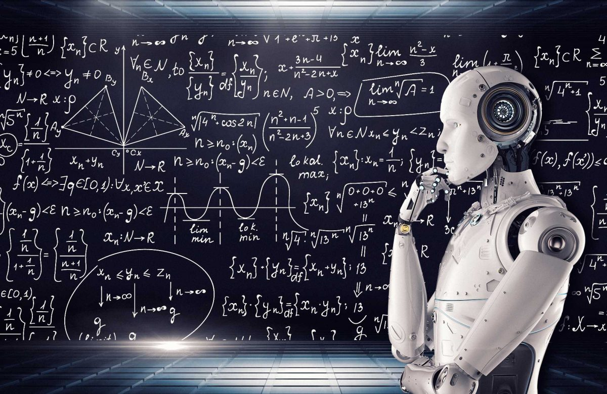
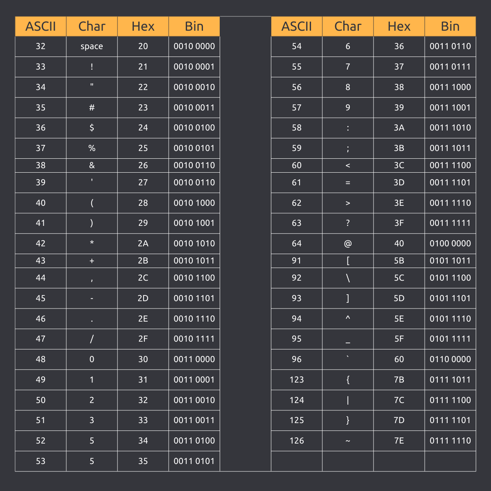

codifiche
le codifiche sono un metodo per associare a ciascun numero di codice una sequenza di bit. Nel caso pi`u semplice ogni carattere ha un numero tra 0 e 127
e la codifica `e semplicemente la codifica binaria del numero in 7 bit. Acronimo di American Standard Code for Information Interchange.
Ascii

i file ASCII sono usati per tradurre informazioni
binarie in semplici documenti di testo come file TXT. Di conseguenza, sono spesso usati come intermediari tra programmi che non supportano i reciproci formati.

immagine
Un'immagine è una funzione 2D f(x.y) che rappresenta una misura opportuna di una o più caratteristiche (luminosità, colore, ecc.)
di una data scena. Tipicamente L = 2k, dove k è il numero di bit usato per codificare ciascun pixel (profondità del pixel).
suoni
L'audio digitale è la trasposizione di suoni (o di registrazioni di suoni in formato analogico, di output elettrici di strumentazione audio elettronica analogica)
in una forma digitale che può essere convertita, quasi in tempo reale o in differita, in suoni percepibili dall'uomo anche come identici a quelli originali.

numeri in (N,Q,Z)
L'insieme dei numeri naturali(N) viene sempre identificato dalla lettera N, indicata in matematica con la doppia barra diagonale.
I numeri naturali sono infiniti e si possono anche definire numeri interi non negativi. I numeri naturali costituiscono i primi numeri a essere stati usati storicamente dall'uomo.
L'insieme dei numeri razionali (Q) è formato da tutti i numeri interi positivi e negativi e da tutti i numeri frazionali positivi e negativi
(es: 1, -1, 1/2, 2/3...). In questo insieme è sempre possibile la somma, la moltiplicazione, la sottrazione e la divisione degli elementi che vi appartengono.
I numeri relativi, detti anche numeri interi relativi e indicati con il simbolo ℤ,
sono tutti i numeri interi e sono caratterizzati da un segno negativo, nullo o positivo: Z = {...,−3,−2,−1, 0, 1, 2, 3, ...}
indice